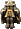

地上地下城
夢見之塔
 迪格邦克
迪格邦克
妖獸窟
海賊村地城
海賊要塞
海灘衝刺
不可思議地城
冰之城
怪物城堡
滿月的櫻花村
寂靜路易斯
諾克斯要塞
異次元地帶
公會城地城
鏡之城
【寂靜路易斯】王室地下迴廊｜被遺忘的書房1｜被遺忘的書房2｜被遺忘的藏書庫1｜被遺忘的藏書庫2｜被遺忘的藏書庫3｜寂靜路易斯1｜寂靜路易斯2｜寂靜路易斯3｜扭曲時間之間
※各怪物的編輯請由標題的鉛筆圖示進行。掉落物品的編輯也可以從掉落物品欄的
陷阱
中心附近有最後之甲(AAR+3,SAR+2,HIT-10,MHIT-5)陷阱
看不到全畫面(可視範圍受限)
出現怪物
 光之精靈
光之精靈
| 光之精靈 | Lv | AC | MC | AAR | SAR | 掉落物品 |
| HP:46645 | 100 | -30 | -70 | 31 | 25 |  混合藥水、希望之火、布里茲維克、加利卡拉舌頭(魔)、 混合藥水、希望之火、布里茲維克、加利卡拉舌頭(魔)、 加利卡拉血液[聖]、海市蜃樓地圖、速度藥水(高速)、克羅伊茨、 加利卡拉血液[聖]、海市蜃樓地圖、速度藥水(高速)、克羅伊茨、 上級靈魂寶石、 上級靈魂寶石、 靈魂石[魅魔] 靈魂石[魅魔] |
| 經驗值 | 名聲值 | 金錢 | 攻擊屬性 | 防禦屬性 | ||
| 23000 | 0 | ～12795 | 無 | 無 | ||
| STR | DEX | INT | WIS | CON | ||
| 100 | 81 | 100 | 100 | 21 |
比維法薩爾（遠距離） 混亂無效
 黑暗復仇者
黑暗復仇者
| 黑暗復仇者 | Lv | AC | MC | AAR | SAR | 掉落物品 |
| HP:55910 | 100 | -30 | -70 | 32 | 26 | 混合藥水、黃金護脛、真實的火把、加利卡拉雪包、加利卡拉舌頭[魔]、海市蜃樓地圖、速度藥水(高速)、坦克之甲、特羅伊弗萊切、上級靈魂寶石、靈魂石[魅魔] |
| 經驗值 | 名聲值 | 金錢 | 攻擊屬性 | 防禦屬性 | ||
| 24000 | 0 | ～13241 | 無 | 無 | ||
| STR | DEX | INT | WIS | CON | ||
| 101 | 101 | 21 | 21 | 21 |
備註 近距離攻擊的傷害會被MC減輕
 堅硬魔像
堅硬魔像
| 堅硬魔像 | Lv | AC | MC | AAR | SAR | 掉落物品 |
| HP:59084～61840 | 100 | -75 | -20 | 45 | 28 | 刺擊碼手套、斯特普、  盧卡大地騎士女鎧、凱斯金內爾希姆、海市蜃樓地圖、混合藥水、速度藥水(高速)、皮塔沃克、艾爾馬斯之刃、上級靈魂寶石、靈魂石[魅魔] |
| 經驗值 | 名聲值 | 金錢 | 攻擊屬性 | 防禦屬性 | ||
| 23000 | 0 | 12880 | 無 | 無 | ||
| STR | DEX | INT | WIS | CON | ||
| 101 | 101 | 21 | 21 | 21 |
備註 噴射之燄 混亂無效
漣漪魔像
| 漣漪魔像 | Lv | AC | MC | AAR | SAR | 掉落物品 |
| HP:150000 | 105 | -90 | -50 | 34 | 45 | 海市蜃樓地圖、速度藥水(高速)、魔導士緩速、混合藥水、上級靈魂寶石、靈魂石[魅魔] |
| 經驗值 | 名聲值 | 金錢 | 攻擊屬性 | 防禦屬性 | ||
| 60000 | 950 | 14265 | 無 | 無 | ||
| STR | DEX | INT | WIS | CON | ||
| 150 | 130 | 60 | 80 | 100 |
備註 噴射之燄 混亂無效
備註
魔導士緩速